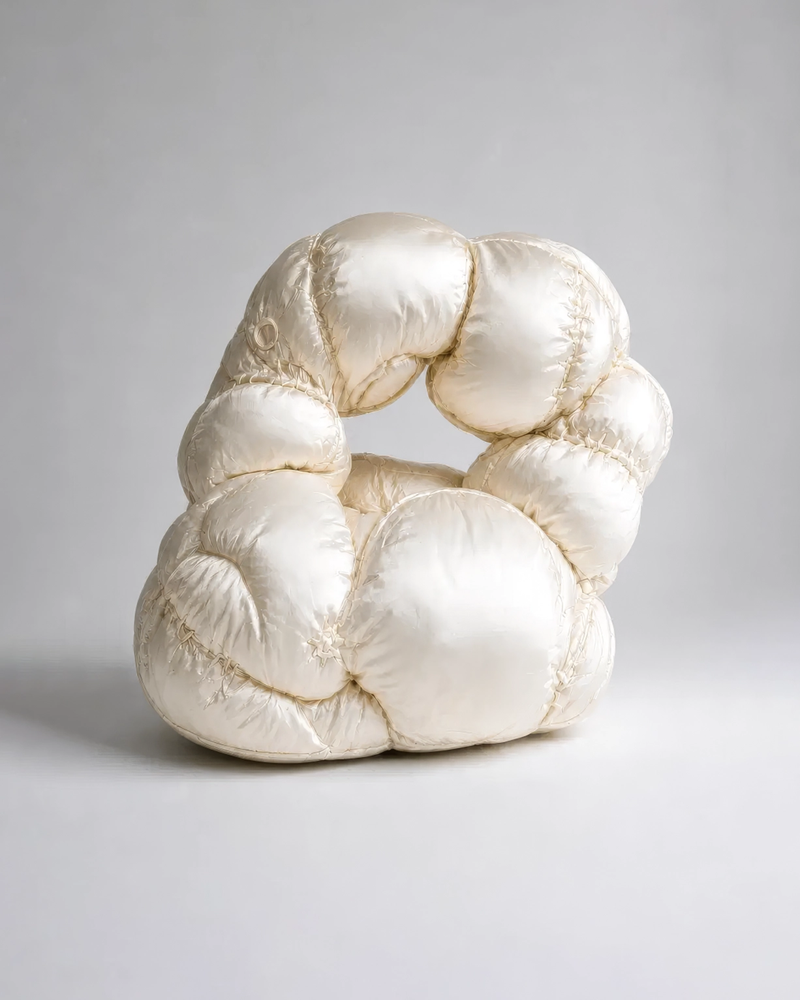

No.14 Variable Assistive Devices
Knee Memory Pod, 2041
웅크린 생활 자세를 유지하기 위해 개발된 복합 휴식 장치이다. 장시간 휴식이 가능하도록 설계되었다. 무릎 위에 쿠션이 올라가는 형태이기 때문에 간단한 생활 기능도 수행할 수 있다. 별도의 책상 없이도 휴식과 작업이 하나의 자세 안에서 이루어진다.
- 크기/무게
- W: 95, H: 115(cm) / 7.5(kg)
- 재질
- 나일론 원단, 폴리에스터 충전재, 고밀도 폴리우레탄 폼, 면사
- 사용 목적
- 휴식과 작업을 모두 수행
- 유도 자세
-
양무릎을 가슴 가까이 굽힌 자세
척추 C자 굴곡
무릎 위 패널을 중심으로 상체를 약간 앞으로 기울인 자세 - 추정 환경
-
침대와 책상을 동시에 둘 수 없는 원룸
작업 공간과 휴식 공간이 통합된 초소형 주거 - 추정 사용
- 무릎을 굽힌 상태로 장치 내부에 몸을 넣은 뒤 패널을 펼쳐 식사와 작업을 수행했던 것으로 추정된다. 휴식이 필요할 경우 상체만 뒤로 기대어 동일한 자세에서 수면을 취했던 것으로 보인다.
* 이미지에 마우스를 올려보세요.